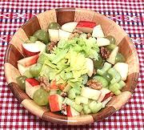

|
Apple Celery Walnut SaladSweden - Äpple-, selleri- och valnötssallad | ||||
| Makes: Effort: Sched: DoAhead: |
3-1/2 # ** 45 min Yes |
This crisp and refreshing salad is easy to make, and suitable for buffet - there's nothing in it that will wilt. | |||
|
1 1-3/4 4 3 ------- 3 1/4 1-1/2 1 1/4 ------- |
# # oz oz --- T c T t t --- |
Celery w/Leaves Apples (1) White Grapes (2) Walnut Pieces -- Dressing Olive Oil, ExtV Cider Vinegar Honey, liquid Salt Pepper ---------- |
Make: - (45 min)
|